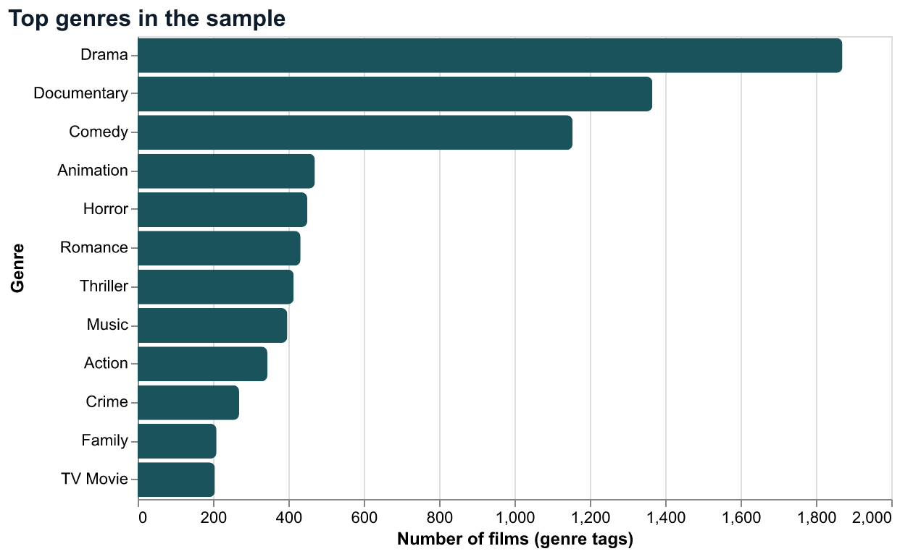
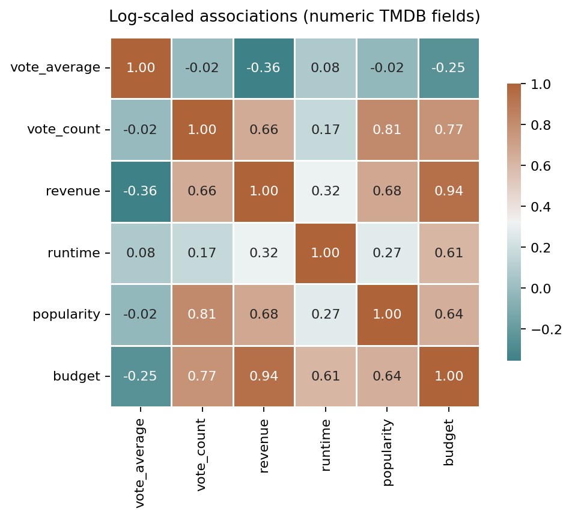

Introduction
Our team studies publicly listed movies from The Movie Database (TMDB) to understand long-run catalog growth, genre mix, typical runtimes, correlations among numeric popularity fields, and how reported budget relates to revenue when both are available. The tasks were to sample and clean the table, build five linked views that move from when films appear in the data to what kinds of films they are and how money and ratings behave, and to implement interactions so visitors can focus on a time range, genre, or voting threshold without editing code.
Data
We use a random sample of 10,000 rows saved as TMDB_movie_dataset_v11_10000.csv, drawn from the
larger TMDB-derived file described on Open Data soft / Kaggle-style mirrors of TMDB exports. Each row is one title with
24 attributes, including identifiers, text fields (title, overview),
release_date, genres (comma-separated labels), vote_average, vote_count,
revenue, budget, runtime, popularity, and production country and language
metadata. Missing values are common for optional text; we restrict certain charts to rows with positive runtime or positive budget
and revenue where needed.
References
1. Release-year trend (D3 — line + brush)
Figure 1. Count of sampled films by release year
How to use: Drag a window on the lower orange timeline (brush). The main teal line and area rescale to that year range so you can compare growth in the streaming era versus earlier decades.
Takeaway: The sample is densest after roughly 2000, with a visible rise through the 2010s—consistent with more titles being cataloged and more international releases represented in TMDB over time.
2. Genre mix (Altair — bar chart)
Figure 2. Twelve most frequent primary genre tags (films can list multiple genres)

Takeaway: Drama, Comedy, and Documentary-style labels dominate this slice, which frames later views: the catalog skews toward broad audience genres rather than niche categories alone.
3. Runtime distribution (Altair — linked histogram)
Figure 3. Histogram of runtime with linked brush
How to use: Click and drag on the x-axis of the top histogram to select a runtime range; the lower panel shows the filtered distribution.
Takeaway: Most non-missing runtimes cluster between roughly 80 and 120 minutes, matching conventional feature length; very short or very long films are rare in this sample.
4. Numeric associations (Matplotlib — heatmap)
Figure 4. Correlation heatmap (log-scaled skewed fields)

Takeaway: Vote count and popularity move together, while vote average is only weakly related to revenue—big box office and high user rating are not the same dimension in this data.
5. Budget vs. revenue (D3 — scatter)
Figure 5. Log-scale scatter for titles with positive budget and revenue
How to use: Choose a primary genre from the menu to restrict points; use the minimum vote-count slider to drop obscure titles with almost no ratings. Hover any dot for exact budget, revenue, and rating.
Takeaway: On log scales, many films sit near the diagonal (similar order of magnitude for budget and revenue), while blockbusters stretch far along the revenue axis—genre filtering shows that pattern holds across several major categories.
Summary and next steps
Findings. Catalog coverage in TMDB is uneven over time but clearly thickens after 2000; genres in our sample lean toward Drama and Comedy; runtimes concentrate near standard feature length; user engagement (votes, popularity) is a different signal from average rating; and budget–revenue comparisons on log scales reveal both proportional returns and a thin tail of very high earners.
Future work. We could merge country or language with the year chart for small multiples, apply inflation-adjusted
dollars for long-run finance comparisons, and use text features from overview or keywords for topic modeling. A
follow-up study could also filter to theatrically released films only to reduce noise from micro-budget entries.
Suggestions. (1) Treat vote count as a visibility threshold before interpreting averages. (2) Keep log or robust scales whenever budget and revenue appear together. (3) When reporting genre share, acknowledge multi-label rows so percentages are described as “genre tags” rather than mutually exclusive buckets.